| 日付 | 2015年7月26日（日） |
|---|---|
| 山域 | 大菩薩 |
| メンバー | 家族（妻、長女・4歳、長男・2歳） |
| 山行形態 | 子連れ日帰り |
| アクセス | 車 |
| ルート (Map) | 上日川峠 (8:19) - (8:50) 福ちゃん荘 - (9:59) 雷岩 - (10:13) 大菩薩嶺 - (10:32) 昼食 (11:26) - (12:10) 大菩薩峠 (12:26) - (13:04) 福ちゃん荘 (13:25) - (13:49) 上日川峠 |
ここ最近、海ばかりに行っていたので、久しぶりに山に行くことにする。
暑くなってきたので標高の高い山にしか登れなくなってきたが、
子供でも登れる日帰りの高山は数が少ない。
今回は6年ぶりに大菩薩嶺に行ってみることにする。
上日川峠の駐車場に車を停める。標高1580m。
前回は大菩薩峠登山口から歩いたが、マイカーのためここまで車で来られる。
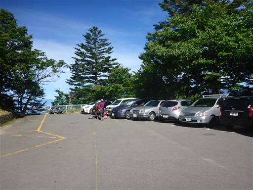
福ちゃん荘まで車道が通じているが、登山道も整備されている。
樹林帯の中を歩いて行く。
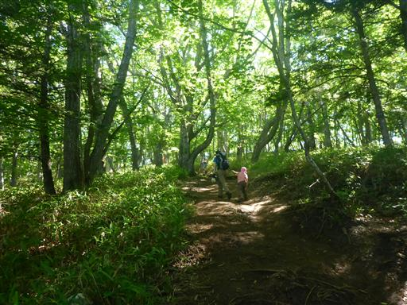
登山道と並行して、車道がすぐ近くを走っている。
車道歩きの方がアップダウンがないため楽そうだ。
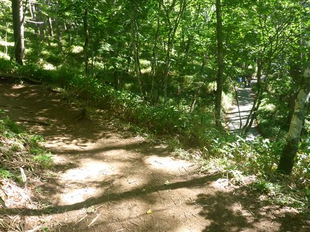
福ちゃん荘に到着する。
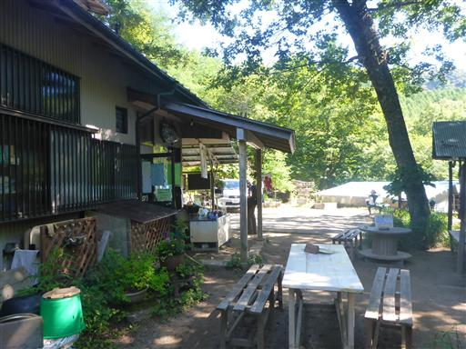
巨大な炊飯器のような物が置かれていて、中を覗くと魚が泳いでいる。
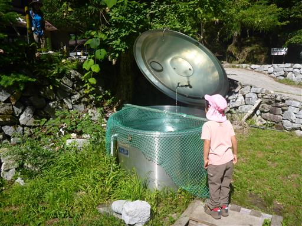
ここから本格的な登山道が始まる。
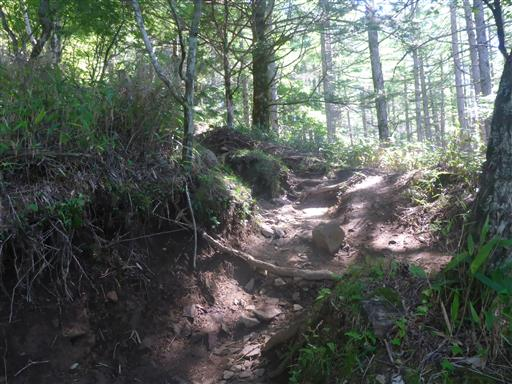
樹間から富士山が見える。本日は快晴だ。
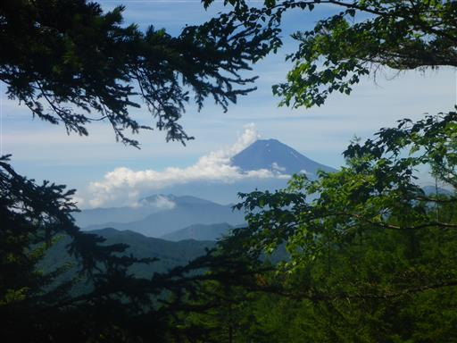
しばらく登ると樹木が無くなってくる。直射日光に晒されると、とにかく暑い。
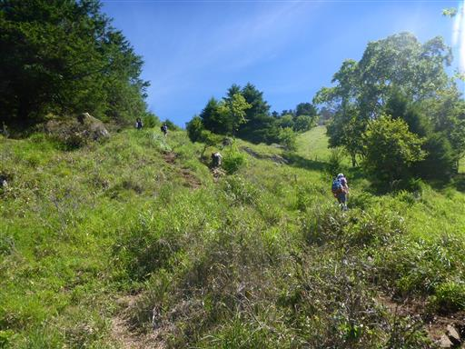
視界は大きく広がる。遠くに南アルプスの山々が並んでいる。
息子は「歩く」と言いだし、途中から歩いて登る。
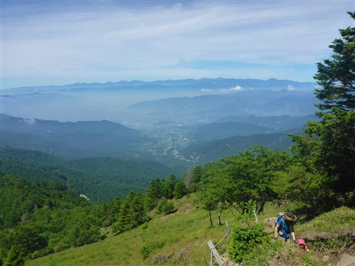
足元にコウリンカの花が咲いている。
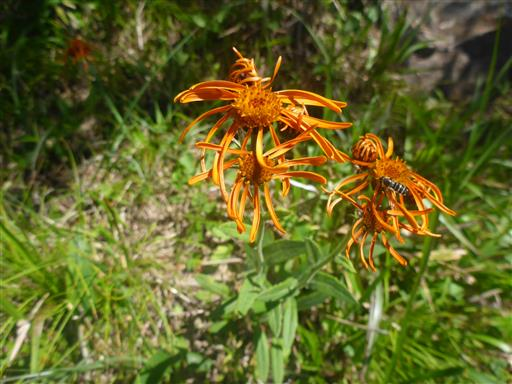
雷岩と呼ばれる岩のある場所で稜線に到達する。
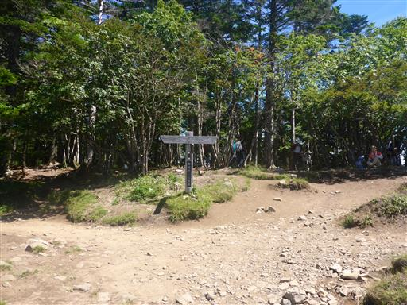
ここからは富士山を始め素晴らしい展望が広がる。
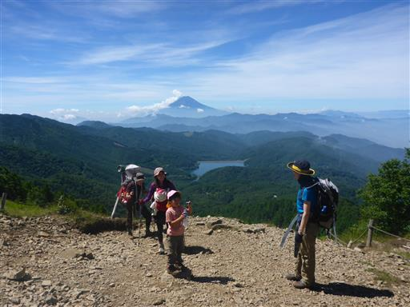
稜線に到達してから樹林帯の中を少し歩くと大菩薩嶺の山頂に到着する。
標高2057m。6年ぶり3度目の山頂だ。
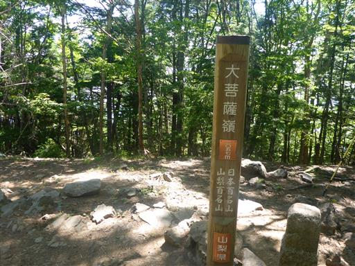
山頂は展望がないため、すぐに引き返す。
この辺りはアップダウンが少なく、比較的歩きやすい道だ。
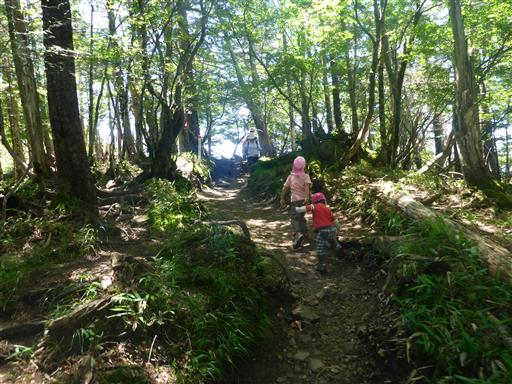
雷岩に戻ったら、大菩薩峠方面へ向かって稜線を歩き出す。
まずは雷岩を乗り越えていく。
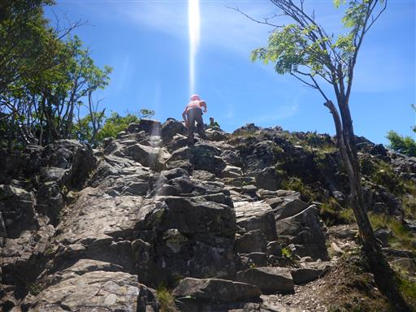
息子も頑張って岩場を歩いている。
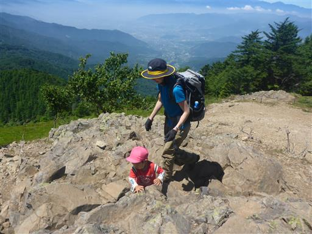
この辺りは木が少ないため、日影を探して昼食をとることにする。
歩いている間はかなり暑かったが、日影に座ると少し寒い。
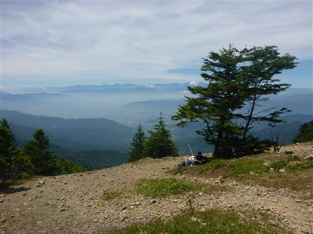
南アルプスが目の間に見える。白峰三山がきれいに並んでいる。
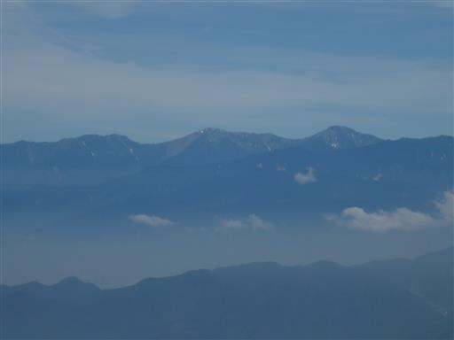
昼食をとったら、展望の良い道を先に進む。
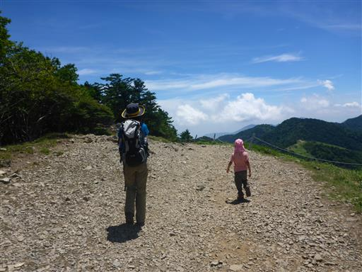
この稜線は美しい草原が広がっている。
この辺りに木が無いのは人為的なものなのだろうか？
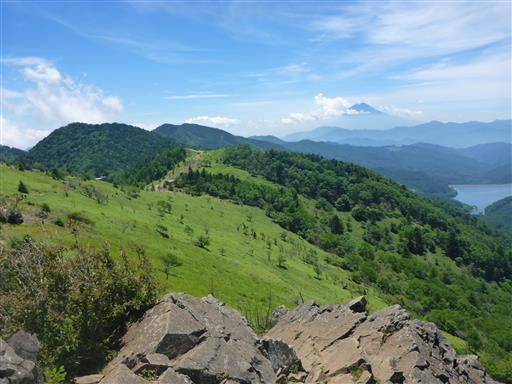
草原の中の道に所々岩場が現れる。岩場を慎重に降りる。
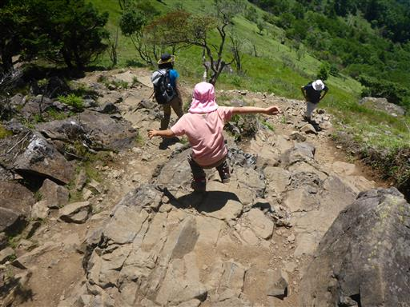
大菩薩峠避難小屋。以前ここに来た際に宿泊した場所だ。
中を覗いてみようとしたが、扉が壊れているのか開かなかった。
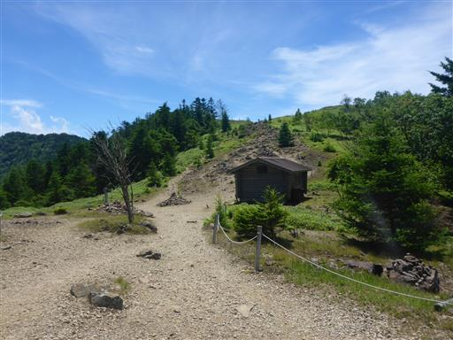
側には巨大なケルンが作られている。子供達が登ろうとしていたが危ないので阻止する。
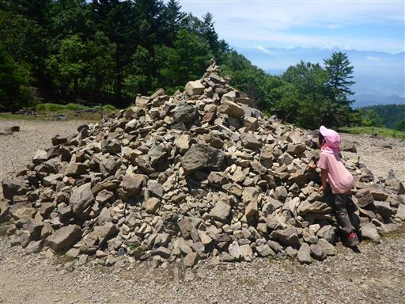
避難小屋から少し歩くと大菩薩峠に到着する。
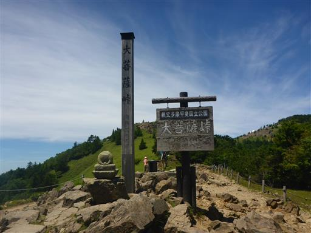
ここには介山荘が建つ。登山者の憩いの場だ。
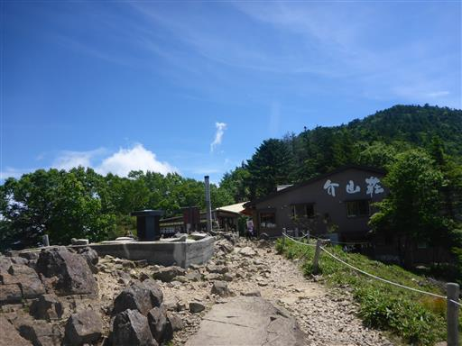
かき氷を食べて一服する。
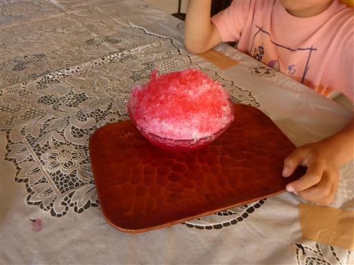
大菩薩峠からの下山道は車道のような広い道だ。
8年前に初めて大菩薩嶺に登った際に歩いた道だが、ほとんど覚えていない。
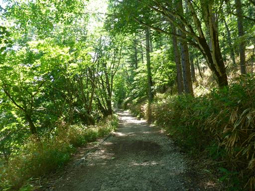
福ちゃん荘で再び休憩しておやつタイムにする。
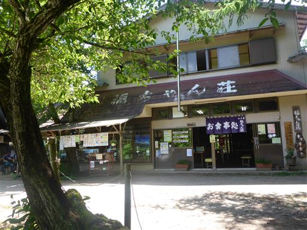
福ちゃん荘から上日川峠までは車道を歩くことにする。
この山とは相性が良いのか、3度来て3度とも晴れてくれた。
今回も美しい景色をのんびりと眺められた山登りだった。
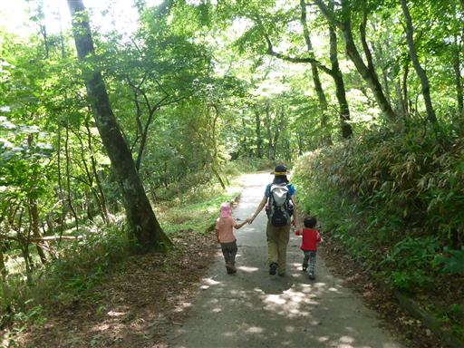